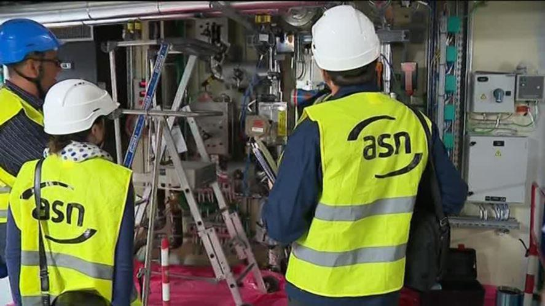
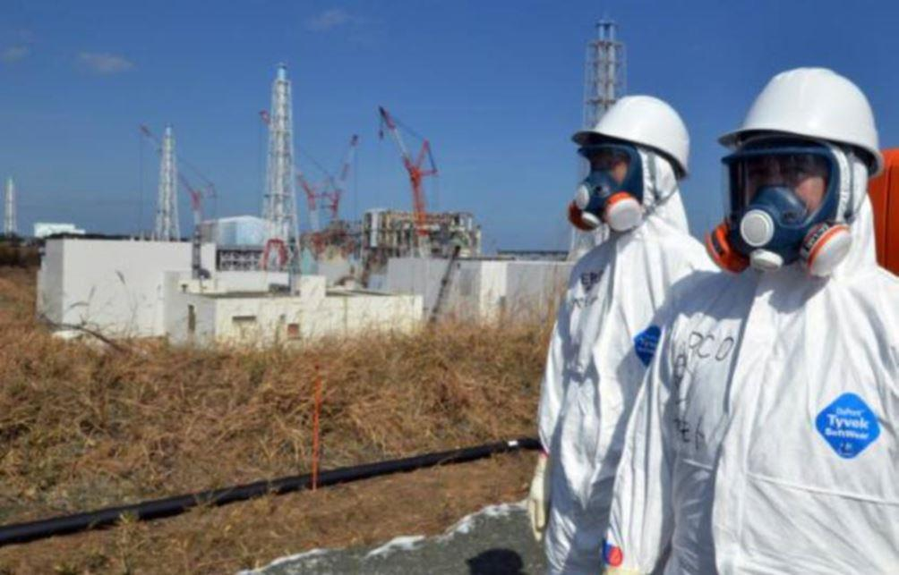
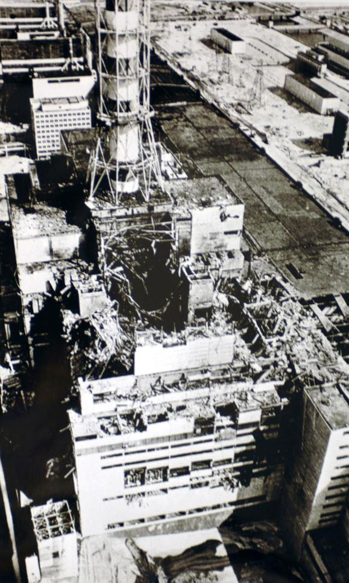
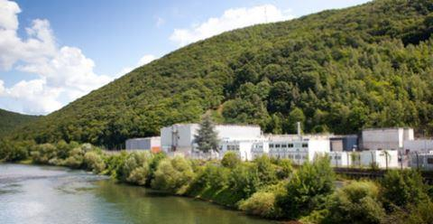
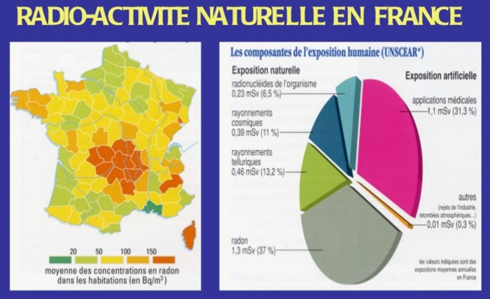
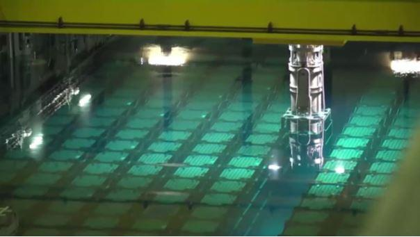
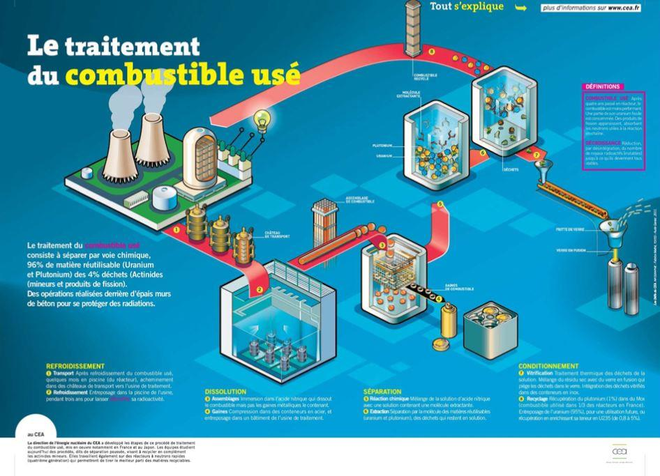

L’énergie nucléaire apporte une valeur ajoutée dans la sécurité d’approvisionnement énergétique pour le plus grand nombre, en traversant les générations. La contrepartie, c’est un très haut niveau d’expertise et de compétences industrielles établi sur le long terme, avec conjointement un environnement institutionnel et régulatoire nécessairement également porté sur le temps long.
Avec maintien en permanence de la priorité une à la sûreté et à la sécurité nucléaire
La sûreté nucléaire (éviter un accident grave et en limiter les conséquences éventuelles) comme la sécurité (au sens protection physique des personnes et des installations à caractère vital pour la Nation) sont des enjeux prioritaires permanents.
La sûreté comme la sécurité relèvent de dispositions techniques et humaines/organisationnelles. L’un ne va pas sans l’autre. Non seulement la technique mais aussi l’homme. « Non solum sed etiam,». La maitrise technique et industrielle est importante. La compétence individuelle et collective, la culture, l’organisation, et la gouvernance dans les prises de décisions et leur mise en œuvre sont conjointement tout aussi importants. C’est bien l’homme fondamentalement qui doit demeurer durablement au centre premier de l’action et de la finalité de celle-ci.
La sûreté nucléaire se distingue par une probabilité d’occurrence très faible mais non nulle, mais avec des conséquences qui peuvent s’établir sur le long terme, sur des dizaines d’années voire plusieurs siècles pour un territoire.
Le premier principe sur lequel se fonde la sûreté nucléaire est celui de responsabilité. C’est l’exploitant nucléaire qui est le premier responsable de la sûreté nucléaire. Ainsi, à Fukushima, au Japon, c’est bien l’exploitant nucléaire Tepco qui était en première ligne et non General Electric ou Toshiba, les fournisseurs de la chaudière nucléaire des réacteurs accidentés.
Cette responsabilité s’exerce de la première conception en passant par la réalisation, l’exploitation, la déconstruction et la prise en compte dans ses provisions financières des provisions pour le traitement ultime de ses opérations industrielles.
C’est le cas pour EDF, premier exploitant nucléaire mondial (73 réacteurs sur les 450 réacteurs industriels en exploitation dans le monde à fin 2018, 58 en France et 15 au Royaume Uni). EDF est concepteur architecte ensemblier, responsable de la démonstration de sûreté à la conception. Il assure la responsabilité de l’exploitation nucléaire. Les provisions effectives pour la déconstruction des réacteurs en fin d’exploitation et pour le traitement ultime des déchets nucléaires sont publiées en toute transparence dans ses comptes, régulièrement audités.
Depuis l’accident de Three Mile Island aux US le 28 mars 1979, (erreur humaine d’interprétation de la situation physique en salle de commande sur un réacteur quasi neuf), la prise en compte de la dimension humaine fait l’objet d’une attention renforcée dans la conception et l’exploitation des installations nucléaires en France avec des dispositions techniques ( interface homme / machine, mise en place d’un simulateur sur chaque site) et humaines /organisationnelles ( meilleure prise en compte de l’erreur humaine à la conception comme à l’exploitation, introduction d’une ligne de défense organisationnelle sur tous les sites à enjeu et y compris au plus haut niveau de l’entreprise, de la tête de Groupe EDF, avec des personnes et des instances dédiées spécifiquement à la sûreté nucléaire à ces différents niveaux dans l’organisation).
Depuis l’accident de Tchernobyl en Ukraine le 26 avril 1986 ( arrêt volontaire des protections physiques du cœur pour réaliser un essai de pertes de sources électriques externes et internes) , il y a eu déploiement au niveau mondial de la notion de « culture de sûreté1 », réaffirmant la notion de l’exploitant nucléaire responsable et mettant en avant l’importance des attitudes et des méthodes d’action : humilité et prudence, ( le risque zéro n’existe pas et n’existera jamais - l’importance des marges de sûreté, analogue au « pied de pilote » des marins), rigueur et professionnalisme, questionnement critique à commencer par soi-même et attitude interrogative, transparence, communication…. Cette notion de culture de sûreté concerne au premier chef l’exploitant nucléaire, mais aussi tous ses sous-traitants et fournisseurs. Les non qualités constatées au Creusot en France dans les années 2000 ont relevé d’une défaillance de la culture de sûreté.
Depuis l’accident de Fukushima au japon le 11 mars 2011, ( non prise en compte d’un niveau exceptionnel de tsunami, mais aussi prise en compte insuffisante du retour d’expérience des événements précédents - prévention du risque hydrogène et confinement des produits radioactifs en cas de fusion du cœur - organisation de crise) il y a eu réaffirmation à travers la communauté nucléaire internationale de l’importance de la prise en compte par l’exploitant nucléaire des enjeux de conception - et introduction de réexamens approfondis sur la prise en compte du risque « d’ effet falaise2 » dans les choix de conception et les modes d’exploitation.
La prise en compte des incertitudes (comme le risque zéro qui n’existe pas, l’avenir est par définition incertain, et des incertitudes sont nécessairement à considérer) , la prise en compte du questionnement critique dans les modes de prise de décision, dans les modes de gouvernance, feront très certainement l’objet d’un retour d’expérience plus approfondi et d’un enseignement majeur généralisé, comme cela a pu l'être pour les accidents majeurs précédents ( nécessité de mieux prendre en considération le risque d’erreur humaine après TMI, et valorisation du rôle et de la place des hommes et des femmes à travers la culture de sûreté après Tchernobyl). Mais il faudra du temps, comme cela a été le cas et c’est encore le cas, pour les accidents majeurs précédents : le nucléaire demeure encore une industrie jeune par rapport aux autres grandes industries, et la diffusion du retour d’expérience tant dans le domaine technico industriel que dans le domaine culturel et socio organisationnel s’établit sur des dizaines d’années au niveau mondial.
Le maintien de la priorité une à la sûreté nucléaire, au-delà de l’exercice de la responsabilité première de l’exploitant nucléaire, s’appuie nécessairement sur des autorités de sûreté nucléaire indépendantes de l’exploitant, compétentes, et reconnues par l’ensemble de la population.
Il doit pouvoir également s’appuyer sur une expertise compétente, des programmes de recherche et de développement pour pouvoir toujours disposer des meilleurs éléments de connaissance et des meilleures techniques disponibles, et d’industriels compétents et performants sur la durée.
Le développement de compétences ne se fait pas en un jour. La transmission des connaissances d’une génération à l’autre impose la prise en compte des savoirs explicites mais aussi implicites, car une masse importante de données et de savoirs se transmettent par frottement et par l’expérience. Aussi performants et utiles puissent elles être, la traçabilité, l’assurance de la qualité, les banques de données et les systèmes de traitement de l’information et d’intelligence dite artificielle ne remplaceront jamais complètement l’intuition et la créativité humaine qui sont à la base de l’engagement, de la motivation et de l’innovation. L’expérience quant à elle permet de garder le lien avec la réalité qui dépasse toujours la fiction.
Le maintien du caractère prioritaire de la sûreté nucléaire doit pouvoir s’appuyer en conséquence sur le maintien dans le temps d’un environnement et d’une politique de long terme, capable de faire face ainsi à des enjeux industriels et financiers sur des échelles de temps quasi immédiate (la fusion du cœur à TMI a eu lieu en trois heures) et notoirement plus longue, le cycle d’un réacteur nucléaire industriel se situant à l’échelle du siècle notamment.
La sûreté nucléaire est ainsi une question immédiate sur le temps réel, mais porte aussi une vision sur le futur, sur le long terme, a minima sur plusieurs générations ; avec en toile permanente de fond, le rôle et la place des hommes et des femmes.
À noter également que le retour d’expérience international met en évidence que la priorité première durablement accordée à la sûreté nucléaire tire la performance industrielle dans son ensemble et qu’elle constitue le meilleur gage de confiance, et donc d’acceptabilité pour le nucléaire, auprès de la population.
Des provisions financières pour le long terme
Les provisions pour la déconstruction des installations nucléaires s’élevaient pour EDF à fin 2018 à 15,985 Milliards d’euro et les provisions pour le traitement à long terme des déchets radioactifs à 9,846 milliards d’euro3. Les risques sur le taux d’actualisation, les futurs taux d’intérêt, les risques futurs de non liquidité, les risques de contrepartie, tant pour les acteurs industriels que pour les opérateurs financiers et autres, le risque de taux de change, font l’objet de dispositions spécifiques prises par EDF.
De manière générale, pour l’ensemble des opérateurs nucléaires au niveau français, comme au niveau européen et mondial, ces provisions s’appuient sur des actifs dédiés industriels créateurs de valeur ajoutée très matérielle sur la durée et dont la contrepartie est robuste, mais aussi sur des instruments financiers aux rendements qui peuvent être très virtuels et théoriques pour le futur.
L’existence de déficits publics prononcés, notamment au niveau de l’Etat français, requiert une vigilance particulière dans le non détournement de ces actifs dédiés qui doivent garantir la liquidité de ces provisions au moment de leur emploi dans le futur. En complément, le développement de nouveaux instruments financiers, dont en particulier les crypto pseudo-monnaies qui ne bénéficient pas de réglementations ad hoc, tant au niveau national qu’européen, devra faire l’objet d’une attention particulière de toutes les parties prenantes afin que ces fonds ne puissent pas être associés sur la durée à des détournements frauduleux voire de blanchiment divers, mais qu’ils soient véritablement créateurs de valeur et dédiés à leur raison d’être.
De la robustesse des dispositions industrielles et des devis pour la déconstruction et le traitement ultime des déchets nucléaires
Le retour d’expérience international pour la filière nucléaire à eau pressurisée permet aujourd’hui de disposer d’un retour d’expérience avec des installations de puissance similaires au parc nucléaire existant en France, et complètement déconstruites.
En France, l’achèvement en cours de la déconstruction de Chooz A dans les Ardennes (réacteur quatre boucles à eau pressurisée) confirme la démonstration du savoir-faire industriel de la France pour ce type de réacteur constituant le parc nucléaire aujourd’hui en exploitation en France, avec une fin de déconstruction prévue pour Chooz A en 2022, conformément à la planification initiale.
La déconstruction en cours en France du surgénérateur à neutrons rapides, Super Phénix, trop (?) en avance sur son temps, (alors que la Russie, l’Inde, et la Chine continuent dans le développement des réacteurs à neutrons rapides…) se déroule sans difficulté majeure. Le traitement du sodium est achevé et la déconstruction de la cuve est en cours.
La déconstruction des réacteurs de première génération de licence CEA, au graphite et au gaz carbonique, (premier réacteur EDF Chinon A1 démarré en 1963 et dernier réacteur EDF Bugey 1 arrêté en 1993), est plus délicate, avec une première sortie de graphite prévue à ce jour à l’horizon 2044 après la réalisation d’un premier démantèlement à sec du premier réacteur, puis la mise à disposition d’un exutoire ad hoc de graphite à l’horizon 2070 pour traiter l’ensemble des réacteurs au graphite gaz français et leurs déchets ultimes de déconstruction.
À noter que la France demeure en avance sur le plan industriel pour la déconstruction de ces types de réacteurs industriels, (réacteurs similaires, 27 réacteurs arrêtés et 14 en exploitation au Royaume Uni, réacteurs au graphite et à eau pressurisée en Russie et Ukraine,…)
Pour le traitement ultime des déchets nucléaires à haute activité et à vie longue, issus du retraitement des combustibles usés, le consensus international s’est établi pour considérer qu’une protection géologique constitue la meilleure disposition industriellement établie pour apporter une sûreté dite passive (sans prise en compte de dispositions humaines ou organisationnelles) sur le long terme.
Avec une sûreté active, la sûreté est d’ores et déjà actuellement assurée pour le court et moyen terme (quelques centaines d’années) avec les provisions financières constituées.
Le choix d’une disposition passive se justifie pour des horizons de temps qui se situent à des échelles de temps plus éloignées, pour prendre en compte le risque de la perte de la mémoire du lieu de stockage, ou tout du moins le risque potentiel pour la population ou l’environnement en tant que tel en cas de défaillance institutionnelle généralisée.
La radioactivité fait partie de la nature, tant dans les rayons cosmiques, que dans la profondeur de la Terre. Les eaux minérales peuvent se différencier en fonction de leur composition en émetteurs radioactifs4. Les voyageurs en avion s’exposent aux rayonnements cosmiques qui peuvent dépendre de l’activité solaire et cosmique5. Ceci constitue un fond de rayonnement radiologique naturel qui constitue un premier point de référence.
Des réacteurs nucléaires naturels ont fonctionné durant des centaines de milliers d’années il y a deux milliards d’années6. Ces réacteurs nous apportent de précieuses informations sur le devenir des matières fissiles, uranium comme plutonium produit dans ces réacteurs, et des produits de fission, sans précaution particulière.
Les dispositions prises en France, pour valoriser les matières fissiles, uranium et plutonium à travers le cycle du combustible et les réacteurs ad hoc permettent de limiter à la source le volume de déchets ultimes résiduels. Certains pays font d’autres choix, et préfèrent disposer d’un cycle ouvert du combustible considérant les combustibles dits usés en sortie de réacteur comme des déchets ultimes. Le choix du non gaspillage, de l’économie des ressources naturelles, du tri sélectif et de l'économie circulaire, mais aussi l’attention à ne pas dépendre que de l’importation pour l’approvisionnement en uranium, conduit légitimement la France à rechercher la valorisation des matières fissiles disponibles et à mettre en œuvre le retraitement des combustibles usés. Les considérations économiques sont nécessairement prises en compte pour optimiser les flux de retraitement et optimiser les cycles de stockage des combustibles usés en piscine, les cycles de retraitement du combustible usé et le recyclage en cœur des matières fissiles. Gardons simplement en mémoire que les matières fissiles recyclables représentent 96 % en masse de la matière présente dans les combustibles usés, et que le potentiel énergétique disponible dans cette matière est très largement supérieur au flux annuel d’importation de pétrole et de gaz de la France (pour un coût direct à l’importation de 38 milliards d’euro pour le pétrole et 10 milliards d’euro pour les douze derniers mois à fin aout 2019)7. Gardons en mémoire également que les réserves d’ores et déjà constituées par la France en matières fissiles pourraient, en cas de tension généralisée sur l’approvisionnement énergétique, et avec l’emploi de filières ad hoc (réacteurs à neutrons rapides), permettre la mise à disposition d’une énergie autonome pour la France pour plusieurs siècles.
Les provisions financières prises en compte en France pour le stockage ultime des déchets nucléaires prennent en compte les hypothèses les plus réalistes sur le plan industriel et les données disponibles au niveau mondial sur le sujet. L’inter-comparaison au niveau international permet de challenger entre elles les solutions industrielles qui se déploient désormais dans plusieurs pays à travers le monde8.
Pour la France, et avec les déchets d’ores et déjà produits ou prévus, le programme industriel associé s’établit jusqu’au milieu du XXIIème siècle a minima.
La nécessité en France d’une piscine complémentaire centralisée d’entreposage des combustibles usés
Le nécessaire équilibre des flux de plutonium entre ce qui sort des réacteurs de production, ce qui va dans les usines de retraitement, et ce qui retourne dans les réacteurs en production, impose de disposer de marges tampons. Aujourd’hui le flux actuel de retraitement du plutonium est calé sur la capacité de recyclage dans les réacteurs à eau pressurisée, les réacteurs à neutrons rapides Phenix et Super Phenix ayant été arrêtés et le projet de réacteur Astrid reporté pour sa phase de réalisation. À ce jour, seule une vingtaine de réacteurs 900 MW sont en situation de pouvoir accueillir le plutonium recyclé à travers le combustible MOX. L’extension au palier 1300 MW est en cours d’instruction. Le recyclage du plutonium sur plusieurs cycles dans le MOX fait également l’objet d’une étude en cours.
Ces études et instructions dont dépend l’extension voire le maintien des flux de recyclages du plutonium9, impose de différer les opérations de retraitement pour une partie du combustible usé et donc de renforcer les capacités d’entreposage des combustibles usés.
Pour des raisons de sûreté, plutôt que de renforcer la capacité d’accueil de chaque piscine de chacun des sites de production, il apparait préférable de viser une installation complètement neuve pour ces installations complémentaires d’entreposage, en disposant des meilleures dispositions techniques disponibles. Tout en limitant ainsi au strict minimum sur chacun des sites de production le volume de combustible usé, ces derniers bénéficient par ailleurs à chaque révision décennale d’une amélioration de sûreté spécifique aux piscines.
Au regard des flux en présence, le besoin de disponibilité de cette piscine complémentaire se situe à l’horizon 203010.
Fin la première partie. Suite dans le prochain numéro de Méthode.
B.M.
NOTES ET RÉFÉRENCES
1. cf rapport INSAG 4, International Nuclear Safety Advisoy Group de l’AIEA https://www-pub.iaea.org/MTCD/publications/PDF/Pub882_web.pdf
2. La petite variation d’un seul paramètre peut introduire un déséquilibre global à l’image de la chute d’une personne en bordure de falaise
3. cf pages 472 et 470 du document de référence d’EDF 2018 https://www.edf.fr/sites/default/files/contrib/groupe-edf/espaces-dedies/espace-finance-fr/informations-financieres/informations-reglementees/document-de-reference/edf-ddr-2018-fr.pdf
5. Pour calculer la dose de rayonnement reçue lors d'un vol et approfondir les connaissances sur le rayonnement cosmique. https://www.sievert-system.org
9. Les capacités de recyclage des tranches nucléaires du parc français conduisent à traiter environ 1100 tonnes de combustibles usés par an, cf page 26 du Document de référence EDF 2018
Partager cette page